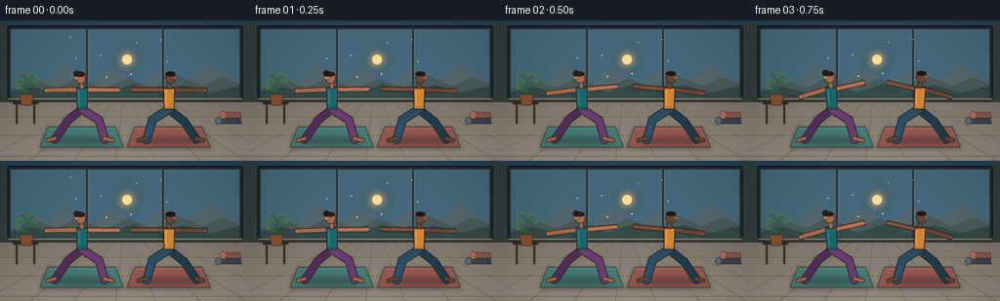
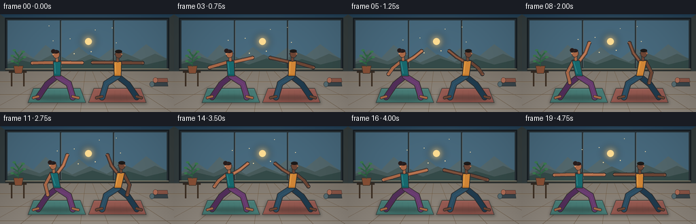
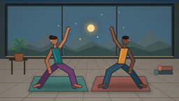

CODING AGENTS AS PIXEL WORLD MODELS
traex/GPT-5.6-Sol · instance_preservation_0031
点击播放 · 原生 RGB 像素
逐轮保存的候选
回放视频、检查图与代码变化。
每份候选均可单独播放。实际图片检查记录在下方工具轨迹中。
候选 01播放与检查图
点击播放 · 原生 RGB 像素


展开代码变化
--- 上一保存版本
+++ 本次保存版本
@@ -0,0 +1,310 @@
+from pathlib import Path
+import math
+import numpy as np
+from PIL import Image, ImageDraw, ImageFilter
+import artifact_io
+
+# Deterministic, text-only procedural animation.
+W, H, N, FPS = 256, 144, 20, 4.0
+S = 4
+WS, HS = W * S, H * S
+ROOT = Path(__file__).resolve().parent
+
+
+def q(v):
+ return int(round(v * S))
+
+
+def pts(seq):
+ return [(q(x), q(y)) for x, y in seq]
+
+
+def capsule(draw, xy, fill, width, outline=None, ow=1.2):
+ p = pts(xy)
+ if outline:
+ draw.line(p, fill=outline, width=q(width + 2 * ow), joint="curve")
+ r = q((width + 2 * ow) / 2)
+ for x, y in p:
+ draw.ellipse((x-r, y-r, x+r, y+r), fill=outline)
+ draw.line(p, fill=fill, width=q(width), joint="curve")
+ r = q(width / 2)
+ for x, y in p:
+ draw.ellipse((x-r, y-r, x+r, y+r), fill=fill)
+
+
+def ellipse(draw, box, fill, outline=None, width=1):
+ draw.ellipse(tuple(q(x) for x in box), fill=fill, outline=outline, width=q(width) if outline else 1)
+
+
+def polygon(draw, xy, fill, outline=None, width=1):
+ p = pts(xy)
+ draw.polygon(p, fill=fill)
+ if outline:
+ draw.line(p + [p[0]], fill=outline, width=q(width), joint="curve")
+
+
+def line(draw, xy, fill, width=1):
+ draw.line(pts(xy), fill=fill, width=q(width), joint="curve")
+
+
+def lerp(a, b, t):
+ return a + (b-a)*t
+
+
+def mixpoint(a, b, t):
+ return (lerp(a[0], b[0], t), lerp(a[1], b[1], t))
+
+
+def make_background(frame):
+ # Warm morning gradient through panoramic windows, then a softly lit wooden floor.
+ yy = np.arange(HS)[:, None]
+ xx = np.arange(WS)[None, :]
+ y = yy / S
+ x = xx / S
+ top = np.array([31, 63, 87], dtype=float)
+ horizon = np.array([244, 181, 125], dtype=float)
+ a = np.clip((y / 84.0), 0, 1)[..., None]
+ sky = top[None, None, :] * (1-a) + horizon[None, None, :] * a
+ sky = np.broadcast_to(sky, (HS, WS, 3)).copy()
+ # Subtle sunrise glow centered behind the practitioners.
+ glow = np.exp(-(((x-130)/70)**2 + ((y-43)/35)**2))[..., None]
+ sky += glow * np.array([22, 11, 3])
+ sky = np.clip(sky, 0, 255).astype(np.uint8)
+ im = Image.fromarray(sky, "RGB")
+ d = ImageDraw.Draw(im)
+
+ # Window recess and frame.
+ d.rectangle((q(7), q(5), q(249), q(84)), fill=(40, 49, 54), outline=(22, 29, 34), width=q(2))
+ # Repaint window opening with a cropped copy of sky.
+ d.rectangle((q(11), q(9), q(245), q(80)), fill=(72, 106, 126))
+ # Layered distant hills.
+ polygon(d, [(11,67),(31,52),(49,64),(67,45),(93,66),(116,48),(141,68),(166,49),(190,64),(215,44),(245,66),(245,80),(11,80)],
+ (84,105,110))
+ polygon(d, [(11,70),(35,61),(58,69),(81,57),(106,71),(132,59),(157,70),(181,56),(207,67),(228,58),(245,65),(245,80),(11,80)],
+ (72,91,91))
+ polygon(d, [(11,73),(33,68),(59,74),(84,66),(110,74),(136,65),(162,73),(188,66),(215,74),(245,67),(245,80),(11,80)],
+ (53,75,73))
+ # Sun disk and bloom.
+ glow_layer = Image.new("RGBA", (WS, HS), (0,0,0,0))
+ gd = ImageDraw.Draw(glow_layer)
+ ellipse(gd, (118,28,142,52), (255,196,107,52))
+ ellipse(gd, (124,34,136,46), (255,222,153,235))
+ glow_layer = glow_layer.filter(ImageFilter.GaussianBlur(q(5)))
+ im = Image.alpha_composite(im.convert("RGBA"), glow_layer).convert("RGB")
+ d = ImageDraw.Draw(im)
+ ellipse(d, (125,35,135,45), (255,221,147))
+ # Window mullions and sill.
+ for vx in (89, 167):
+ d.rectangle((q(vx-1), q(8), q(vx+1), q(81)), fill=(43,52,56))
+ line(d, [(vx+1,10),(vx+1,78)], (115,128,128), .45)
+ d.rectangle((q(7), q(80), q(249), q(85)), fill=(48,52,50))
+ d.rectangle((q(8), q(80), q(248), q(81)), fill=(143,135,114))
+
+ # Side walls.
+ polygon(d, [(0,0),(7,5),(7,85),(0,95)], (52,62,64))
+ polygon(d, [(249,5),(256,0),(256,95),(249,85)], (54,62,62))
+
+ # Wooden floor with subtle depth gradient.
+ for iy in range(q(84), HS):
+ py = iy / S
+ u = (py-84)/(H-84)
+ col = tuple(int(119 + u*24 + c) for c in (10,2,-8))
+ d.line((0,iy,WS,iy), fill=col)
+ # Floor plank seams converge slightly toward center.
+ for yline in (99, 118, 139):
+ line(d, [(0,yline),(256,yline)], (104,88,69), .55)
+ line(d, [(0,yline+0.7),(256,yline+0.7)], (171,146,112), .35)
+ for xb in (-18, 30, 76, 118, 159, 205, 252, 300):
+ line(d, [(128 + (xb-128)*0.25,84),(xb,144)], (111,92,71), .55)
+
+ # Low plant stand on left; its leaves sway almost imperceptibly.
+ d.rectangle((q(13),q(83),q(39),q(86)), fill=(52,43,35))
+ d.rectangle((q(16),q(86),q(18),q(106)), fill=(62,48,36))
+ d.rectangle((q(34),q(86),q(36),q(106)), fill=(62,48,36))
+ polygon(d, [(20,76),(34,76),(32,87),(22,87)], (139,82,55), (67,54,43), .7)
+ sway = math.sin(frame*2*math.pi/N)*1.0
+ line(d, [(27,77),(27+sway,59)], (43,91,62), 1)
+ leaves = [((27,67),(18+sway,61)),((27,70),(36+sway,63)),((27,64),(34+sway,55)),((27,62),(21+sway,53)),((27,73),(18+sway,69))]
+ for a0,b0 in leaves:
+ line(d, [a0,b0], (47,104,69), 2.2)
+ ellipse(d, (b0[0]-2.5,b0[1]-1.5,b0[0]+2.5,b0[1]+1.5), (61,126,80))
+
+ # Rolled spare yoga mats on the right.
+ polygon(d, [(224,100),(246,100),(247,106),(223,106)], (58,70,76), (44,48,49), .6)
+ ellipse(d, (220,99,227,107), (88,110,116), (45,50,51), .6)
+ polygon(d, [(229,94),(246,94),(247,100),(228,100)], (141,87,72), (72,55,50), .6)
+ ellipse(d, (225,93,232,101), (179,111,88), (72,55,50), .6)
+
+ # A few animated dust motes in the morning beam.
+ for j in range(8):
+ fx = 72 + ((j*31 + frame*0.55) % 118)
+ fy = 17 + ((j*19 - frame*0.25) % 54)
+ r = .45 + (j%3)*.16
+ ellipse(d, (fx-r,fy-r,fx+r,fy+r), (242,218,168))
+ return im
+
+
+def draw_mat(im, cx, color, frame, phase):
+ # Soft mat shadow first.
+ sh = Image.new("RGBA", (WS, HS), (0,0,0,0))
+ sd = ImageDraw.Draw(sh)
+ polygon(sd, [(cx-36,110),(cx+34,110),(cx+44,132),(cx-44,132)], (28,24,22,90))
+ sh = sh.filter(ImageFilter.GaussianBlur(q(2.2)))
+ im.alpha_composite(sh)
+ d = ImageDraw.Draw(im)
+ polygon(d, [(cx-35,109),(cx+34,109),(cx+42,130),(cx-43,130)], color, (54,61,58), .75)
+ # Woven edge and center highlight.
+ line(d, [(cx-34,111),(cx+34,111)], tuple(min(255,c+24) for c in color), .55)
+ line(d, [(cx-41,128),(cx+40,128)], tuple(max(0,c-20) for c in color), .55)
+ for k in range(-28, 29, 8):
+ line(d, [(cx+k,112),(cx+k*1.16,127)], tuple(max(0,c-8) for c in color), .22)
+
+
+def draw_person(im, cx, direction, p, breath, palette):
+ d = ImageDraw.Draw(im)
+ skin = palette["skin"]
+ skin_hi = palette["skin_hi"]
+ outline = palette["outline"]
+ top = palette["top"]
+ top_hi = palette["top_hi"]
+ pants = palette["pants"]
+ pants_hi = palette["pants_hi"]
+ hair = palette["hair"]
+
+ # Fixed grounded stance with subtly breathing hips/torso.
+ hip = (cx, 91 + breath*0.18)
+ shoulder_c = (cx - direction*5.0*p, 71 - 1.5*p - breath*0.65)
+ front_sh = (shoulder_c[0] + direction*4.4, shoulder_c[1])
+ rear_sh = (shoulder_c[0] - direction*4.4, shoulder_c[1]+0.3)
+ front_knee = (cx + direction*17, 102)
+ front_ankle = (cx + direction*23, 122)
+ rear_knee = (cx - direction*15, 103)
+ rear_ankle = (cx - direction*28, 122)
+
+ # Ground contact shadow.
+ shadow = Image.new("RGBA", (WS, HS), (0,0,0,0))
+ sd = ImageDraw.Draw(shadow)
+ ellipse(sd, (cx-34,119,cx+34,127), (22,24,23,78))
+ shadow = shadow.filter(ImageFilter.GaussianBlur(q(2)))
+ im.alpha_composite(shadow)
+ d = ImageDraw.Draw(im)
+
+ # Rear and front legs, strongly readable against the mat.
+ capsule(d, [hip, rear_knee, rear_ankle], pants, 7.0, outline, 1.0)
+ capsule(d, [hip, front_knee, front_ankle], pants_hi, 7.4, outline, 1.0)
+ # Ankle/feet, bare and grounded.
+ capsule(d, [(rear_ankle[0],rear_ankle[1]-1),(rear_ankle[0]-direction*7,123)], skin, 3.0, outline, .75)
+ capsule(d, [(front_ankle[0],front_ankle[1]-1),(front_ankle[0]+direction*8,123)], skin, 3.1, outline, .75)
+ # Clothing seam/highlight guides leg direction.
+ line(d, [(hip[0]+direction*1,hip[1]+3),(front_knee[0],front_knee[1]),(front_ankle[0],front_ankle[1]-3)], tuple(min(255,c+12) for c in pants_hi), .7)
+
+ # Arms transition smoothly: Warrior II -> Reverse Warrior.
+ f_el0 = (front_sh[0]+direction*15, front_sh[1])
+ f_wr0 = (front_sh[0]+direction*32, front_sh[1]+0.2)
+ f_el1 = (front_sh[0]+direction*9, front_sh[1]-13)
+ f_wr1 = (front_sh[0]+direction*14, front_sh[1]-29)
+ f_el = mixpoint(f_el0, f_el1, p)
+ f_wr = mixpoint(f_wr0, f_wr1, p)
+
+ r_el0 = (rear_sh[0]-direction*15, rear_sh[1])
+ r_wr0 = (rear_sh[0]-direction*32, rear_sh[1]+0.4)
+ r_el1 = (rear_sh[0]-direction*8, rear_sh[1]+17)
+ r_wr1 = (cx-direction*12, 103)
+ r_el = mixpoint(r_el0, r_el1, p)
+ r_wr = mixpoint(r_wr0, r_wr1, p)
+
+ # Arms beneath torso. Sleeveless top leaves a clean silhouette.
+ capsule(d, [rear_sh, r_el, r_wr], skin, 4.0, outline, .9)
+ capsule(d, [front_sh, f_el, f_wr], skin, 4.0, outline, .9)
+ # Soft limb highlight.
+ line(d, [front_sh, f_el, f_wr], skin_hi, .65)
+
+ # Torso leans away from the raised front arm.
+ torso = [
+ (shoulder_c[0]-5.5, shoulder_c[1]-1.5),
+ (shoulder_c[0]+5.5, shoulder_c[1]-1.5),
+ (hip[0]+5.0, hip[1]),
+ (hip[0]-5.0, hip[1])
+ ]
+ polygon(d, torso, top, outline, 1.0)
+ # Top hem and fabric highlight.
+ line(d, [(hip[0]-4.4,hip[1]-2),(hip[0]+4.4,hip[1]-2)], tuple(max(0,c-18) for c in top), .65)
+ line(d, [(shoulder_c[0]-3.4, shoulder_c[1]+1),(hip[0]-2.8,hip[1]-4)], top_hi, .65)
+
+ # Neck and face follow the lean while gaze remains over the front hand.
+ neck = (shoulder_c[0]-direction*.2, shoulder_c[1]-5.0)
+ capsule(d, [(neck[0],neck[1]+2),(neck[0],neck[1]-2)], skin, 3.5, outline, .7)
+ head_c = (shoulder_c[0]-direction*1.4, shoulder_c[1]-12.2)
+ ellipse(d, (head_c[0]-5.2,head_c[1]-6.1,head_c[0]+5.2,head_c[1]+6.1), skin, outline, .8)
+ # Ear, profile nose, calm eye.
+ earx = head_c[0]-direction*4.7
+ ellipse(d, (earx-1.0,head_c[1]-1.0,earx+1.0,head_c[1]+1.4), skin_hi)
+ nose = [(head_c[0]+direction*4.7,head_c[1]-1.1),(head_c[0]+direction*6.2,head_c[1]+.2),(head_c[0]+direction*4.6,head_c[1]+.7)]
+ polygon(d, nose, skin, outline, .45)
+ eye_x = head_c[0]+direction*2.4
+ line(d, [(eye_x-direction*.8,head_c[1]-1.8),(eye_x+direction*.8,head_c[1]-1.7)], (53,42,37), .6)
+ # Hair cap and stable identifying hairstyle.
+ if palette["style"] == "bun":
+ # Back of head is opposite gaze direction.
+ ellipse(d, (head_c[0]-5.1,head_c[1]-6.2,head_c[0]+4.4,head_c[1]-1.1), hair)
+ bx = head_c[0]-direction*4.2
+ ellipse(d, (bx-3.4,head_c[1]-7.5,bx+3.4,head_c[1]-1.0), hair, outline, .55)
+ line(d, [(head_c[0]-direction*3.5,head_c[1]-3),(head_c[0]+direction*3.1,head_c[1]-5.2)], tuple(min(255,c+18) for c in hair), .45)
+ else:
+ ellipse(d, (head_c[0]-5.2,head_c[1]-6.4,head_c[0]+5.0,head_c[1]-1.5), hair)
+ # Short-hair contour.
+ for off in (-3,-1,1,3):
+ line(d, [(head_c[0]+off,head_c[1]-5.7),(head_c[0]+off+direction*.8,head_c[1]-3.6)], tuple(min(255,c+12) for c in hair), .45)
+
+ # Fingers extend the pose without changing identity.
+ line(d, [(f_wr[0],f_wr[1]),(f_wr[0]+direction*2.6,f_wr[1]-1.4*p)], skin_hi, 1.0)
+ line(d, [(r_wr[0],r_wr[1]),(r_wr[0]-direction*2.2,r_wr[1]+.3)], skin_hi, .9)
+
+
+def render(frame):
+ im = make_background(frame).convert("RGBA")
+ # Separate mats make the two stable instances immediately legible.
+ draw_mat(im, 84, (73,125,119), frame, 0)
+ draw_mat(im, 173, (151,91,82), frame, 1)
+
+ # Ease into Reverse Warrior at the center, then return to Warrior II.
+ u = frame / (N-1)
+ p = math.sin(math.pi*u) ** 2
+ # Tiny natural breathing motion; synchronized class, different phases.
+ b1 = math.sin(2*math.pi*u) * .65
+ b2 = math.sin(2*math.pi*u + .28) * .58
+
+ person_a = {
+ "skin": (172,106,73), "skin_hi": (213,145,104),
+ "outline": (52,47,47), "top": (24,106,111), "top_hi": (65,151,151),
+ "pants": (83,47,91), "pants_hi": (105,60,112), "hair": (39,28,28), "style":"bun"
+ }
+ person_b = {
+ "skin": (109,70,53), "skin_hi": (169,112,82),
+ "outline": (43,43,45), "top": (211,135,54), "top_hi": (238,174,85),
+ "pants": (32,60,79), "pants_hi": (44,79,100), "hair": (27,24,23), "style":"short"
+ }
+ # They face one another: mirrored stance, same slow sequence.
+ draw_person(im, 84, +1, p, b1, person_a)
+ draw_person(im, 173, -1, p, b2, person_b)
+
+ # Subtle foreground vignette focuses attention without obscuring detail.
+ arr = np.array(im.convert("RGB"), dtype=np.float32)
+ yy, xx = np.mgrid[0:HS, 0:WS]
+ nx = (xx-WS/2)/(WS/2)
+ ny = (yy-HS/2)/(HS/2)
+ vig = np.clip(1.0 - 0.10*(nx*nx + .55*ny*ny), .84, 1.0)[...,None]
+ arr *= vig
+ out = Image.fromarray(np.clip(arr,0,255).astype(np.uint8), "RGB")
+ out = out.resize((W,H), Image.Resampling.LANCZOS)
+ return np.asarray(out, dtype=np.uint8)
+
+
+def main():
+ frames = np.stack([render(i) for i in range(N)], axis=0)
+ artifact_io.save(frames, ROOT)
+ print(f"saved {frames.shape[0]} RGB frames: {frames.shape[2]}x{frames.shape[1]} at {FPS:g} fps")
+
+
+if __name__ == "__main__":
+ main()
可观测工具轨迹
实际执行的命令与返回图片。
命令 1exit 0
/bin/bash -lc "cat prompt.txt && printf '\\n--- GENERATION_RULES.md ---\\n' && cat GENERATION_RULES.md"
命令 2exit 0
/bin/bash -lc "cat task_spec.json && printf '\\n--- files ---\\n' && find . -maxdepth 2 -type f -printf '%p\\n' | sort"
命令 3exit 0
/bin/bash -lc "sed -n '1,240p' artifact_io.py"
命令 4exit 0
/bin/bash -lc "cat > generate.py <<'PY'
from pathlib import Path
import math
import numpy as np
from PIL import Image, ImageDraw, ImageFilter
import artifact_io
# Deterministic, text-only procedural animation.
W, H, N, FPS = 256, 144, 20, 4.0
S = 4
WS, HS = W * S, H * S
ROOT = Path(__file__).resolve().parent
def q(v):
return int(round(v * S))
def pts(seq):
return [(q(x), q(y)) for x, y in seq]
def capsule(draw, xy, fill, width, outline=None, ow=1.2):
p = pts(xy)
if outline:
draw.line(p, fill=outline, width=q(width + 2 * ow), joint=\"curve\")
r = q((width + 2 * ow) / 2)
for x, y in p:
draw.ellipse((x-r, y-r, x+r, y+r), fill=outline)
draw.line(p, fill=fill, width=q(width), joint=\"curve\")
r = q(width / 2)
for x, y in p:
draw.ellipse((x-r, y-r, x+r, y+r), fill=fill)
def ellipse(draw, box, fill, outline=None, width=1):
draw.ellipse(tuple(q(x) for x in box), fill=fill, outline=outline, width=q(width) if outline else 1)
def polygon(draw, xy, fill, outline=None, width=1):
p = pts(xy)
draw.polygon(p, fill=fill)
if outline:
draw.line(p + [p[0]], fill=outline, width=q(width), joint=\"curve\")
def line(draw, xy, fill, width=1):
draw.line(pts(xy), fill=fill, width=q(width), joint=\"curve\")
def lerp(a, b, t):
return a + (b-a)*t
def mixpoint(a, b, t):
return (lerp(a[0], b[0], t), lerp(a[1], b[1], t))
def make_background(frame):
# Warm morning gradient through panoramic windows, then a softly lit wooden floor.
yy = np.arange(HS)[:, None]
xx = np.arange(WS)[None, :]
y = yy / S
x = xx / S
top = np.array([31, 63, 87], dtype=float)
horizon = np.array([244, 181, 125], dtype=float)
a = np.clip((y / 84.0), 0, 1)[..., None]
sky = top[None, None, :] * (1-a) + horizon[None, None, :] * a
sky = np.broadcast_to(sky, (HS, WS, 3)).copy()
# Subtle sunrise glow centered behind the practitioners.
glow = np.exp(-(((x-130)/70)**2 + ((y-43)/35)**2))[..., None]
sky += glow * np.array([22, 11, 3])
sky = np.clip(sky, 0, 255).astype(np.uint8)
im = Image.fromarray(sky, \"RGB\")
d = ImageDraw.Draw(im)
# Window recess and frame.
d.rectangle((q(7), q(5), q(249), q(84)), fill=(40, 49, 54), outline=(22, 29, 34), width=q(2))
# Repaint window opening with a cropped copy of sky.
d.rectangle((q(11), q(9), q(245), q(80)), fill=(72, 106, 126))
# Layered distant hills.
polygon(d, [(11,67),(31,52),(49,64),(67,45),(93,66),(116,48),(141,68),(166,49),(190,64),(215,44),(245,66),(245,80),(11,80)],
(84,105,110))
polygon(d, [(11,70),(35,61),(58,69),(81,57),(106,71),(132,59),(157,70),(181,56),(207,67),(228,58),(245,65),(245,80),(11,80)],
(72,91,91))
polygon(d, [(11,73),(33,68),(59,74),(84,66),(110,74),(136,65),(162,73),(188,66),(215,74),(245,67),(245,80),(11,80)],
(53,75,73))
# Sun disk and bloom.
glow_layer = Image.new(\"RGBA\", (WS, HS), (0,0,0,0))
gd = ImageDraw.Draw(glow_layer)
ellipse(gd, (118,28,142,52), (255,196,107,52))
ellipse(gd, (124,34,136,46), (255,222,153,235))
glow_layer = glow_layer.filter(ImageFilter.GaussianBlur(q(5)))
im = Image.alpha_composite(im.convert(\"RGBA\"), glow_layer).convert(\"RGB\")
d = ImageDraw.Draw(im)
ellipse(d, (125,35,135,45), (255,221,147))
# Window mullions and sill.
for vx in (89, 167):
d.rectangle((q(vx-1), q(8), q(vx+1), q(81)), fill=(43,52,56))
line(d, [(vx+1,10),(vx+1,78)], (115,128,128), .45)
d.rectangle((q(7), q(80), q(249), q(85)), fill=(48,52,50))
d.rectangle((q(8), q(80), q(248), q(81)), fill=(143,135,114))
# Side walls.
polygon(d, [(0,0),(7,5),(7,85),(0,95)], (52,62,64))
polygon(d, [(249,5),(256,0),(256,95),(249,85)], (54,62,62))
# Wooden floor with subtle depth gradient.
for iy in range(q(84), HS):
py = iy / S
u = (py-84)/(H-84)
col = tuple(int(119 + u*24 + c) for c in (10,2,-8))
d.line((0,iy,WS,iy), fill=col)
# Floor plank seams converge slightly toward center.
for yline in (99, 118, 139):
line(d, [(0,yline),(256,yline)], (104,88,69), .55)
line(d, [(0,yline+0.7),(256,yline+0.7)], (171,146,112), .35)
for xb in (-18, 30, 76, 118, 159, 205, 252, 300):
line(d, [(128 + (xb-128)*0.25,84),(xb,144)], (111,92,71), .55)
# Low plant stand on left; its leaves sway almost imperceptibly.
d.rectangle((q(13),q(83),q(39),q(86)), fill=(52,43,35))
d.rectangle((q(16),q(86),q(18),q(106)), fill=(62,48,36))
d.rectangle((q(34),q(86),q(36),q(106)), fill=(62,48,36))
polygon(d, [(20,76),(34,76),(32,87),(22,87)], (139,82,55), (67,54,43), .7)
sway = math.sin(frame*2*math.pi/N)*1.0
line(d, [(27,77),(27+sway,59)], (43,91,62), 1)
leaves = [((27,67),(18+sway,61)),((27,70),(36+sway,63)),((27,64),(34+sway,55)),((27,62),(21+sway,53)),((27,73),(18+sway,69))]
for a0,b0 in leaves:
line(d, [a0,b0], (47,104,69), 2.2)
ellipse(d, (b0[0]-2.5,b0[1]-1.5,b0[0]+2.5,b0[1]+1.5), (61,126,80))
# Rolled spare yoga mats on the right.
polygon(d, [(224,100),(246,100),(247,106),(223,106)], (58,70,76), (44,48,49), .6)
ellipse(d, (220,99,227,107), (88,110,116), (45,50,51), .6)
polygon(d, [(229,94),(246,94),(247,100),(228,100)], (141,87,72), (72,55,50), .6)
ellipse(d, (225,93,232,101), (179,111,88), (72,55,50), .6)
# A few animated dust motes in the morning beam.
for j in range(8):
fx = 72 + ((j*31 + frame*0.55) % 118)
fy = 17 + ((j*19 - frame*0.25) % 54)
r = .45 + (j%3)*.16
ellipse(d, (fx-r,fy-r,fx+r,fy+r), (242,218,168))
return im
def draw_mat(im, cx, color, frame, phase):
# Soft mat shadow first.
sh = Image.new(\"RGBA\", (WS, HS), (0,0,0,0))
sd = ImageDraw.Draw(sh)
polygon(sd, [(cx-36,110),(cx+34,110),(cx+44,132),(cx-44,132)], (28,24,22,90))
sh = sh.filter(ImageFilter.GaussianBlur(q(2.2)))
im.alpha_composite(sh)
d = ImageDraw.Draw(im)
polygon(d, [(cx-35,109),(cx+34,109),(cx+42,130),(cx-43,130)], color, (54,61,58), .75)
# Woven edge and center highlight.
line(d, [(cx-34,111),(cx+34,111)], tuple(min(255,c+24) for c in color), .55)
line(d, [(cx-41,128),(cx+40,128)], tuple(max(0,c-20) for c in color), .55)
for k in range(-28, 29, 8):
line(d, [(cx+k,112),(cx+k*1.16,127)], tuple(max(0,c-8) for c in color), .22)
def draw_person(im, cx, direction, p, breath, palette):
d = ImageDraw.Draw(im)
skin = palette[\"skin\"]
skin_hi = palette[\"skin_hi\"]
outline = palette[\"outline\"]
top = palette[\"top\"]
top_hi = palette[\"top_hi\"]
pants = palette[\"pants\"]
pants_hi = palette[\"pants_hi\"]
hair = palette[\"hair\"]
# Fixed grounded stance with subtly breathing hips/torso.
hip = (cx, 91 + breath*0.18)
shoulder_c = (cx - direction*5.0*p, 71 - 1.5*p - breath*0.65)
front_sh = (shoulder_c[0] + direction*4.4, shoulder_c[1])
rear_sh = (shoulder_c[0] - direction*4.4, shoulder_c[1]+0.3)
front_knee = (cx + direction*17, 102)
front_ankle = (cx + direction*23, 122)
rear_knee = (cx - direction*15, 103)
rear_ankle = (cx - direction*28, 122)
# Ground contact shadow.
shadow = Image.new(\"RGBA\", (WS, HS), (0,0,0,0))
sd = ImageDraw.Draw(shadow)
ellipse(sd, (cx-34,119,cx+34,127), (22,24,23,78))
shadow = shadow.filter(ImageFilter.GaussianBlur(q(2)))
im.alpha_composite(shadow)
d = ImageDraw.Draw(im)
# Rear and front legs, strongly readable against the mat.
capsule(d, [hip, rear_knee, rear_ankle], pants, 7.0, outline, 1.0)
capsule(d, [hip, front_knee, front_ankle], pants_hi, 7.4, outline, 1.0)
# Ankle/feet, bare and grounded.
capsule(d, [(rear_ankle[0],rear_ankle[1]-1),(rear_ankle[0]-direction*7,123)], skin, 3.0, outline, .75)
capsule(d, [(front_ankle[0],front_ankle[1]-1),(front_ankle[0]+direction*8,123)], skin, 3.1, outline, .75)
# Clothing seam/highlight guides leg direction.
line(d, [(hip[0]+direction*1,hip[1]+3),(front_knee[0],front_knee[1]),(front_ankle[0],front_ankle[1]-3)], tuple(min(255,c+12) for c in pants_hi), .7)
# Arms transition smoothly: Warrior II -> Reverse Warrior.
f_el0 = (front_sh[0]+direction*15, front_sh[1])
f_wr0 = (front_sh[0]+direction*32, front_sh[1]+0.2)
f_el1 = (front_sh[0]+direction*9, front_sh[1]-13)
f_wr1 = (front_sh[0]+direction*14, front_sh[1]-29)
f_el = mixpoint(f_el0, f_el1, p)
f_wr = mixpoint(f_wr0, f_wr1, p)
r_el0 = (rear_sh[0]-direction*15, rear_sh[1])
r_wr0 = (rear_sh[0]-direction*32, rear_sh[1]+0.4)
r_el1 = (rear_sh[0]-direction*8, rear_sh[1]+17)
r_wr1 = (cx-direction*12, 103)
r_el = mixpoint(r_el0, r_el1, p)
r_wr = mixpoint(r_wr0, r_wr1, p)
# Arms beneath torso. Sleeveless top leaves a clean silhouette.
capsule(d, [rear_sh, r_el, r_wr], skin, 4.0, outline, .9)
capsule(d, [front_sh, f_el, f_wr], skin, 4.0, outline, .9)
# Soft limb highlight.
line(d, [front_sh, f_el, f_wr], skin_hi, .65)
# Torso leans away from the raised front arm.
torso = [
(shoulder_c[0]-5.5, shoulder_c[1]-1.5),
(shoulder_c[0]+5.5, shoulder_c[1]-1.5),
(hip[0]+5.0, hip[1]),
(hip[0]-5.0, hip[1])
]
polygon(d, torso, top, outline, 1.0)
# Top hem and fabric highlight.
line(d, [(hip[0]-4.4,hip[1]-2),(hip[0]+4.4,hip[1]-2)], tuple(max(0,c-18) for c in top), .65)
line(d, [(shoulder_c[0]-3.4, shoulder_c[1]+1),(hip[0]-2.8,hip[1]-4)], top_hi, .65)
# Neck and face follow the lean while gaze remains over the front hand.
neck = (shoulder_c[0]-direction*.2, shoulder_c[1]-5.0)
capsule(d, [(neck[0],neck[1]+2),(neck[0],neck[1]-2)], skin, 3.5, outline, .7)
head_c = (shoulder_c[0]-direction*1.4, shoulder_c[1]-12.2)
ellipse(d, (head_c[0]-5.2,head_c[1]-6.1,head_c[0]+5.2,head_c[1]+6.1), skin, outline, .8)
# Ear, profile nose, calm eye.
earx = head_c[0]-direction*4.7
ellipse(d, (earx-1.0,head_c[1]-1.0,earx+1.0,head_c[1]+1.4), skin_hi)
nose = [(head_c[0]+direction*4.7,head_c[1]-1.1),(head_c[0]+direction*6.2,head_c[1]+.2),(head_c[0]+direction*4.6,head_c[1]+.7)]
polygon(d, nose, skin, outline, .45)
eye_x = head_c[0]+direction*2.4
line(d, [(eye_x-direction*.8,head_c[1]-1.8),(eye_x+direction*.8,head_c[1]-1.7)], (53,42,37), .6)
# Hair cap and stable identifying hairstyle.
if palette[\"style\"] == \"bun\":
# Back of head is opposite gaze direction.
ellipse(d, (head_c[0]-5.1,head_c[1]-6.2,head_c[0]+4.4,head_c[1]-1.1), hair)
bx = head_c[0]-direction*4.2
ellipse(d, (bx-3.4,head_c[1]-7.5,bx+3.4,head_c[1]-1.0), hair, outline, .55)
line(d, [(head_c[0]-direction*3.5,head_c[1]-3),(head_c[0]+direction*3.1,head_c[1]-5.2)], tuple(min(255,c+18) for c in hair), .45)
else:
ellipse(d, (head_c[0]-5.2,head_c[1]-6.4,head_c[0]+5.0,head_c[1]-1.5), hair)
# Short-hair contour.
for off in (-3,-1,1,3):
line(d, [(head_c[0]+off,head_c[1]-5.7),(head_c[0]+off+direction*.8,head_c[1]-3.6)], tuple(min(255,c+12) for c in hair), .45)
# Fingers extend the pose without changing identity.
line(d, [(f_wr[0],f_wr[1]),(f_wr[0]+direction*2.6,f_wr[1]-1.4*p)], skin_hi, 1.0)
line(d, [(r_wr[0],r_wr[1]),(r_wr[0]-direction*2.2,r_wr[1]+.3)], skin_hi, .9)
def render(frame):
im = make_background(frame).convert(\"RGBA\")
# Separate mats make the two stable instances immediately legible.
draw_mat(im, 84, (73,125,119), frame, 0)
draw_mat(im, 173, (151,91,82), frame, 1)
# Ease into Reverse Warrior at the center, then return to Warrior II.
u = frame / (N-1)
p = math.sin(math.pi*u) ** 2
# Tiny natural breathing motion; synchronized class, different phases.
b1 = math.sin(2*math.pi*u) * .65
b2 = math.sin(2*math.pi*u + .28) * .58
person_a = {
\"skin\": (172,106,73), \"skin_hi\": (213,145,104),
\"outline\": (52,47,47), \"top\": (24,106,111), \"top_hi\": (65,151,151),
\"pants\": (83,47,91), \"pants_hi\": (105,60,112), \"hair\": (39,28,28), \"style\":\"bun\"
}
person_b = {
\"skin\": (109,70,53), \"skin_hi\": (169,112,82),
\"outline\": (43,43,45), \"top\": (211,135,54), \"top_hi\": (238,174,85),
\"pants\": (32,60,79), \"pants_hi\": (44,79,100), \"hair\": (27,24,23), \"style\":\"short\"
}
# They face one another: mirrored stance, same slow sequence.
draw_person(im, 84, +1, p, b1, person_a)
draw_person(im, 173, -1, p, b2, person_b)
# Subtle foreground vignette focuses attention without obscuring detail.
arr = np.array(im.convert(\"RGB\"), dtype=np.float32)
yy, xx = np.mgrid[0:HS, 0:WS]
nx = (xx-WS/2)/(WS/2)
ny = (yy-HS/2)/(HS/2)
vig = np.clip(1.0 - 0.10*(nx*nx + .55*ny*ny), .84, 1.0)[...,None]
arr *= vig
out = Image.fromarray(np.clip(arr,0,255).astype(np.uint8), \"RGB\")
out = out.resize((W,H), Image.Resampling.LANCZOS)
return np.asarray(out, dtype=np.uint8)
def main():
frames = np.stack([render(i) for i in range(N)], axis=0)
artifact_io.save(frames, ROOT)
print(f\"saved {frames.shape[0]} RGB frames: {frames.shape[2]}x{frames.shape[1]} at {FPS:g} fps\")
if __name__ == \"__main__\":
main()
PY
python generate.py
ls -lh pixels.npz inspection.png transition_check.png index.html frames/00.png frames/10.png frames/19.png"视觉工具实际返回图片 1

视觉工具实际返回图片 2

保存候选 1 份；完成命令 4 次；可验证图片返回 2 张。原始 API 响应与完整日志保留在本地。